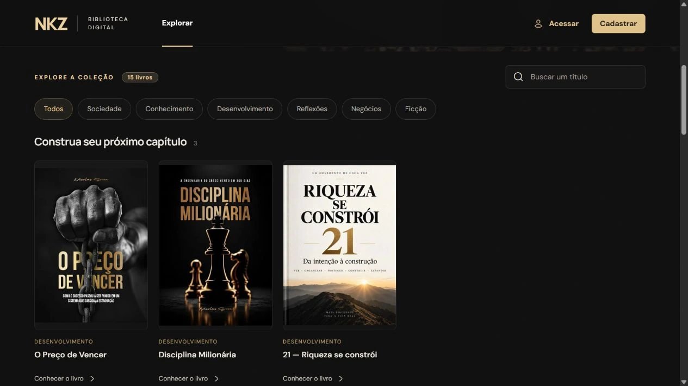
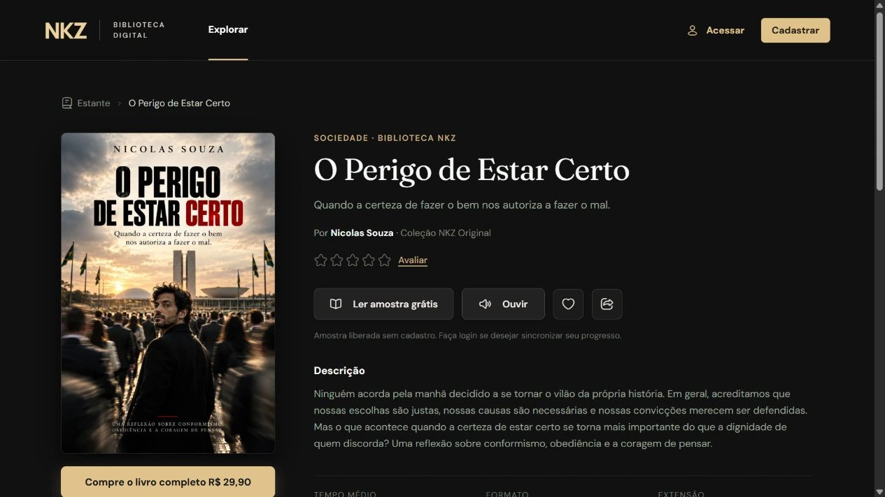
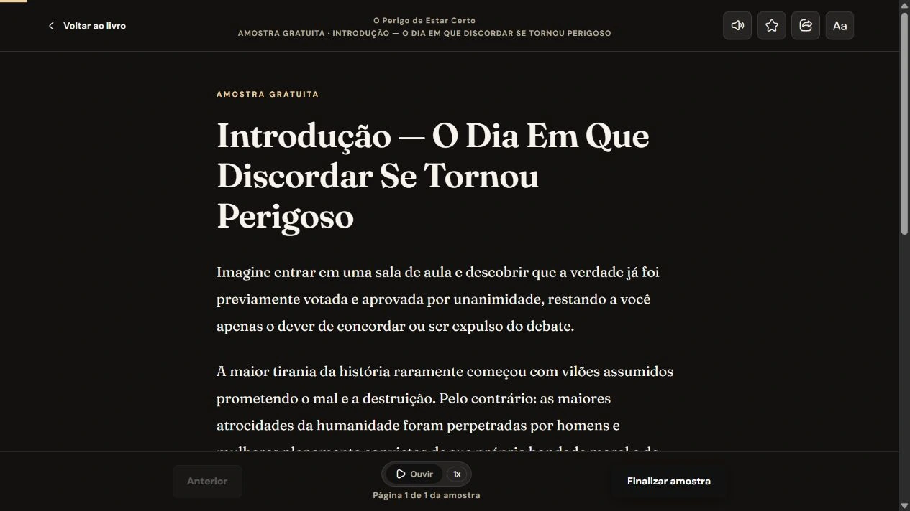
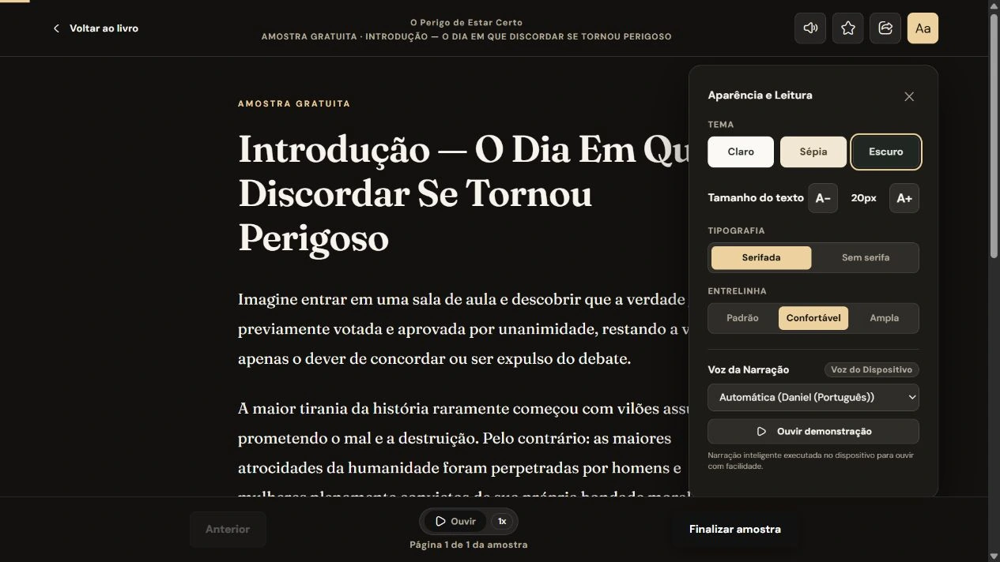

Sua próxima leitura.
Um espaço só seu.
Projeto pessoal de website para livros e conteúdo digital. A NKZ reúne um acervo organizado por temas, páginas dedicadas às obras e um leitor de amostras, conectando a descoberta de um título ao primeiro contato com a leitura.
O destaque editorial aproxima capa, apresentação da obra e acesso à amostra.
Encontrar um assunto.
Descobrir uma leitura.
A página de exploração combina um livro em destaque com estantes temáticas. As capas criam o primeiro contato visual; categorias, títulos e acessos às obras organizam o restante da navegação.
A busca por título e os filtros por tema oferecem caminhos para quem já tem uma intenção de leitura. A organização em estantes também permite percorrer o acervo sem depender de uma pesquisa específica.

Busca e filtros acompanham a navegação entre as estantes.

Capa, autoria e descrição reunidas com as ações da obra.
As capas
em primeiro plano.
A base escura valoriza as imagens dos livros. O dourado destaca a marca, os filtros e as principais ações da interface.
Um tom
editorial.
Fraunces nos títulos traz uma referência ao universo dos livros. DM Sans organiza a navegação e os textos de apoio.
Da descoberta
ao conteúdo.
A sequência conecta a exploração do acervo à página da obra e à amostra de leitura disponível no navegador.
Menos navegação.
Mais espaço para o texto.
Ao abrir uma amostra, a interface deixa a vitrine e passa a priorizar o conteúdo. A coluna de leitura ganha destaque, com retorno à obra no cabeçalho e controles de página junto à base da tela.
O painel de preferências reúne temas claro, sépia e escuro, tamanho de texto, tipografia e entrelinha. Os controles de voz e velocidade de narração também fazem parte dessa área de leitura.

Uma área dedicada à leitura, com acesso aos controles essenciais.

Ajustes de apresentação e controles de narração em um painel.
Levar a estante.
Continuar a descoberta.
No celular, o livro em destaque se reorganiza em uma composição vertical. As categorias e estantes usam navegação horizontal, mantendo capas e títulos como pontos de referência do acervo.
No leitor, o cabeçalho se torna compacto e reúne ações adicionais em um menu. A coluna de texto acompanha a largura da tela, enquanto os controles de leitura permanecem junto à base.